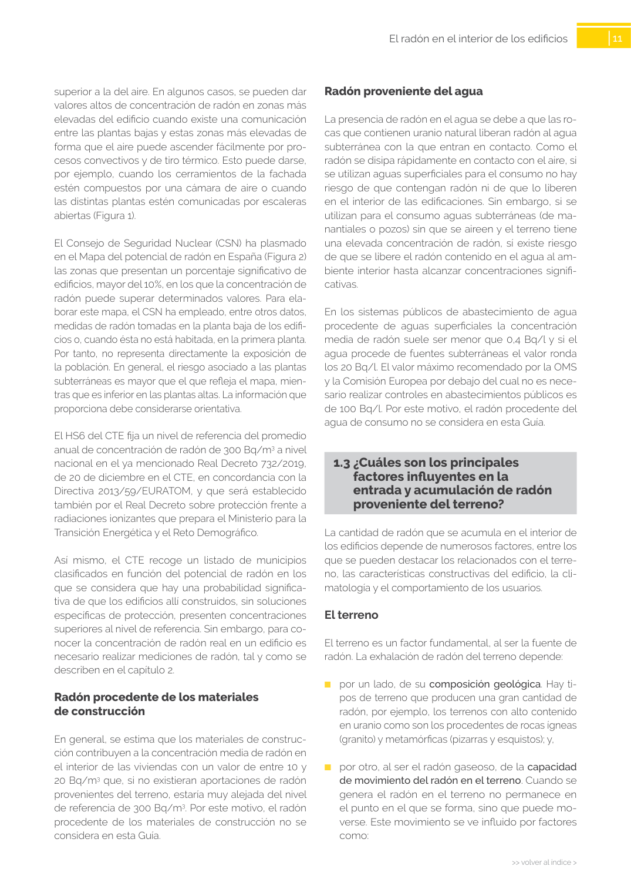

GUIA · Radón proveniente del agua · versión sin-fecha · capa guia
Formatos: JSON compacto · Markdown · PDF fuente
Ámbito del documento · texto del ámbito · documento y tablas
Tipo: tablas, figuras · nivel 3 · sección estimada: 8 escalera abierta · padre: a0022
Radón proveniente del agua La presencia de radón en el agua se debe a que las ro cas que contienen uranio natural liberan radón al agua subterránea con la que entran en contacto. Como el radón se disipa rápidamente en contacto con el aire, si se utilizan aguas superficiales para el consumo no hay riesgo de que contengan radón ni de que lo liberen en el interior de las edificaciones. Sin embargo, si se utilizan para el consumo aguas subterráneas (de ma nantiales o pozos) sin que se aireen y el terreno tiene una elevada concentración de radón, sí existe riesgo de que se libere el radón contenido en el agua al am biente interior hasta alcanzar concentraciones signifi cativas. En los sistemas públicos de abastecimiento de agua procedente de aguas superficiales la concentración media de radón suele ser menor que 0,4 Bq/l y si el agua procede de fuentes subterráneas el valor ronda los 20 Bq/l. El valor máximo recomendado por la OMS y la Comisión Europea por debajo del cual no es nece sario realizar controles en abastecimientos públicos es de 100 Bq/l. Por este motivo, el radón procedente del agua de consumo no se considera en esta Guía.

PDF fuente redistribuible: copia fiel enlazada en esta página (SHA256 verificado).